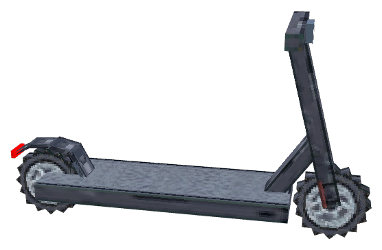

Цифры и движение
Спидометр показывает DATA_SPEED × 72, движение по миру — DATA_SPEED × 0,5. До 80 HUD на ровной, на спуске возможно больше; антибесконечный потолок — 500.
Самокат, которому тесно в городе. До 80 на ровной, а на спуске решает масса. Переключай покрытие, разгоняйся, пробуй стену и возвращайся к порту за зарядом.

ПОТЯНИ, ЧТОБЫ ПОВЕРНУТЬ ↗Играй в блочном 3D-мире: удерживай W/↑ для газа, A/D для поворота, S/↓/пробел для тормоза. Объезжай стену, пройди три контрольные арки, найди станцию и зарядись. На телефоне используй кнопки ниже. Геометрия самоката и константы взяты из мода; физика мира — локальная демонстрация, не сервер Minecraft.
Сначала возьми самокат — потом выезжай на трассу.
На HUD одна внутренняя единица скорости = 72 «км/ч», а перемещение в мире = скорость × 0,5. Это показатели интерфейса мода, не реальные километры в час.
Мёд и сено гасят скорость, вода тормозит движение, слизь отражает от стены. Выбери покрытие и столкнись с препятствием: обычная стена сдвинет самокат, но не выбросит пассажиров. Те же препятствия стоят на настоящем 3D-треке выше; ниже — быстрый эксперимент с правилами из ScooterEntity.java.
На сухой трассе самокат сохраняет ход. На скорости об стену — скольжение вдоль неё без автоматического сброса пассажиров.
Порт стоит справа от старта. Подъедь в радиус 2 блоков по X/Z, ±1 по Y. При скорости ≤ 0,08 внутренних единиц он даёт 1% в секунду. Чтобы сложить: остановись и поставь «На борту» на 0. Заряд и прочность сохраняются в NBT предмета.
Полный заряд — 1 000 000 единиц на 15 000 блоков. Не хочешь ехать десять минут? Промотай локально 1 500 блоков: уйдёт примерно 10%, а зарядный порт станет виден в деле.
Достижение «320 км/ч peek» на деле проверяет ≥ 99,5 на HUD. На ровной лимит 80; спуск снимает ограничение.
Спидометр показывает DATA_SPEED × 72, движение по миру — DATA_SPEED × 0,5. До 80 HUD на ровной, на спуске возможно больше; антибесконечный потолок — 500.
Пассажиры делают разгон и поворот медленнее, зато утяжеляют спуск. Для четырёх и пяти человек высота преодолеваемой ступени падает с 1 до 0,6 и 0,5 блока.
Сложить самокат можно только без пассажиров и при скорости не выше 0,08. Предмет помнит заряд и прочность; обычная стена не сбрасывает седоков.
Ветка внизу страницы связана с общим древом на главной. Получение порта — по предмету в инвентаре; скорость — по HUD, не по пройденным блокам.
Заряда хватит.
Дорогу выбираешь ты.